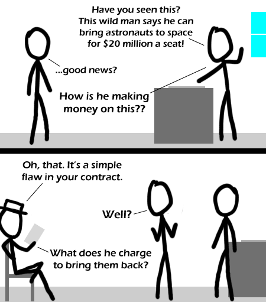

Comic JK 358
When I Feel Like It
⇤
<
?
>
⇥

⇤
<
?
>
⇥
Forum
.
RSS
.
Digg
.
Facebook
.
Reddit
.
Twitter
.
Stumbleupon
Enter your thoughts on number 358 here. Please provide plenty of spamming, trolling, or phreaking. Your mother flings dorky college boys into space for free when she's done with them. Is the white hatter a Linja or just a guy in a mighty fine hat? > He is TBHs alter ego, TWH. TWH is to TBH like Mister Hyde to Doctor Jekyll, just the other way and no transformation. >>Alter ego? He seems more like the same guy with a different hat on. He's not anti TBH or even bizzarrow TBH. >>>Interesting. I know them as BHG and WHG (black/white hat guy). >>>>No, he's helpful. TBH would be the one on the other side of the contract... SpaceX is awesome! Let's just build a space elevator already. Earth to geosynchronous orbit for $30 a kilogram > Assuming magical pixie dust, from which the tether must be crafted. And no, carbon nano-tubes are not a suitable substitute. >>They could work, combined with another system. (For instance, have it form a loop, and have masses constantly moving along the structure at high velocity) or better yet, i heard an idea to just have an inflated tower mounted in an area with high elevation that would reach up to seven kilometers above sea level. even if you are not in orbit, the reduction in air resistance at launch alone would cut a fraction of your fuel costs, and we can manage it right now. >>>whatever happened to the HOTOL^H^H^H^H^H Skylon ?